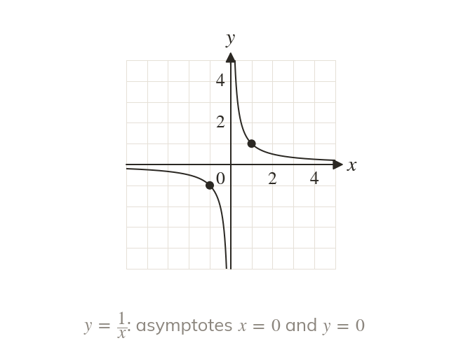
Never meets the axes
has no value at and it is never
So approaches both axes without meeting them: its asymptotes are and
Reciprocal graphs are the first with asymptotes, lines a curve approaches but never meets. Next lesson they are sketched beside other graphs to count where two graphs meet, and at the end of the chapter their asymptotes move with the graph.
Work down the page at your own pace. Write every answer in your book first, then click to check it.
Read each card, then follow the worked examples one step at a time.

has no value at and it is never
So approaches both axes without meeting them: its asymptotes are and
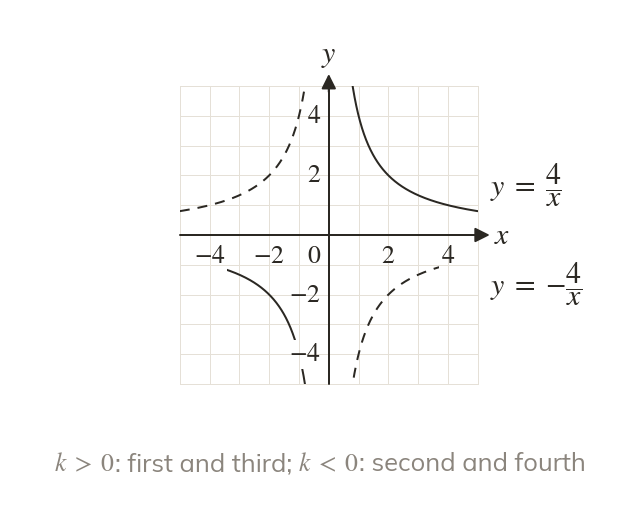
For , is in the first and third quadrants. For it is reflected in the x-axis, into the second and fourth.
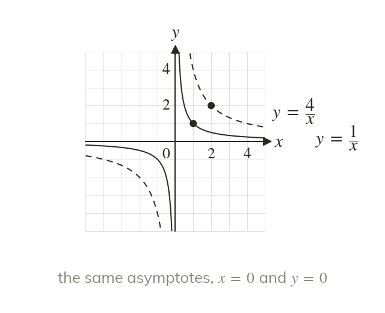
passes through and through The asymptotes are still the axes; only the curve moves further from them.
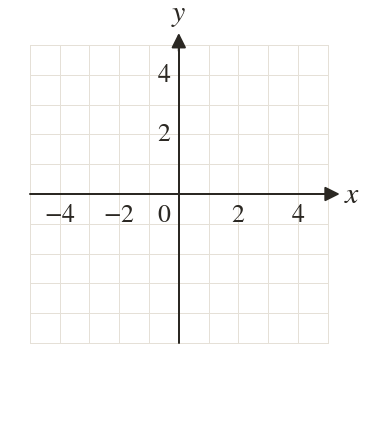
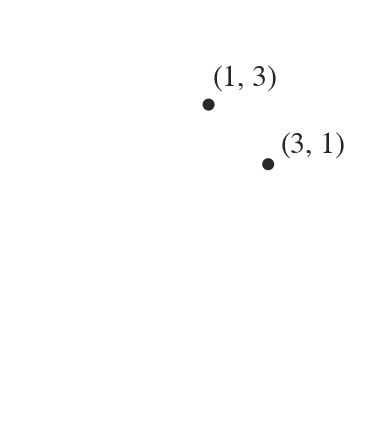
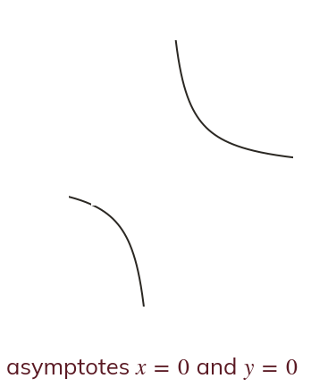
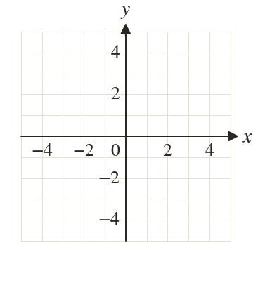
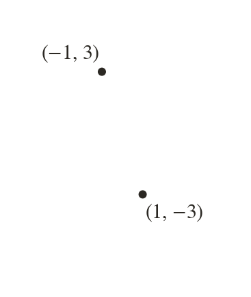
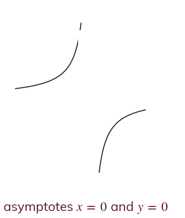
Pick an answer. If it's wrong, the feedback tells you which mistake it was.
Write the blanks in your book first, then tap each one to check.
Read each card, then follow the worked examples one step at a time.
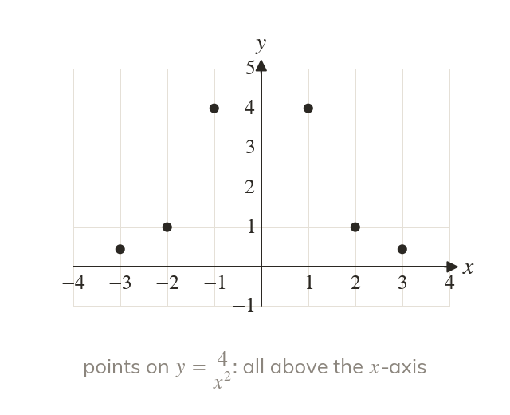
for every except so for , is always positive. Both branches lie above the x-axis, in the first and second quadrants.
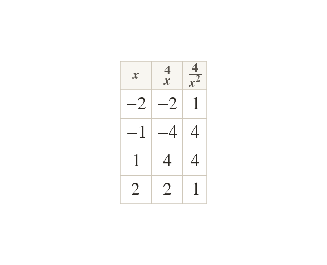
also approaches and without meeting them. It is symmetric in the y-axis, because
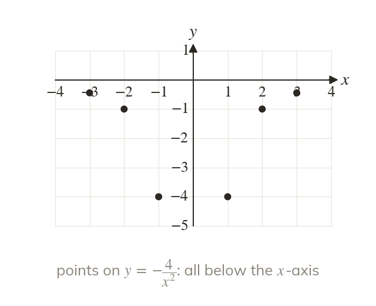
For , is always negative, so it is reflected in the x-axis into the third and fourth quadrants. Its asymptotes are still and
Pick an answer. If it's wrong, the feedback tells you which mistake it was.
Write the blanks in your book first, then tap each one to check.
Finished? Next lesson: 4.4 Points of Intersection.
For each skill, tap the one that is true for you today. Your Revise pages start with anything you mark Not yet.
Your ratings are saved on this device only.
Log in, then search for a code to practise that skill.